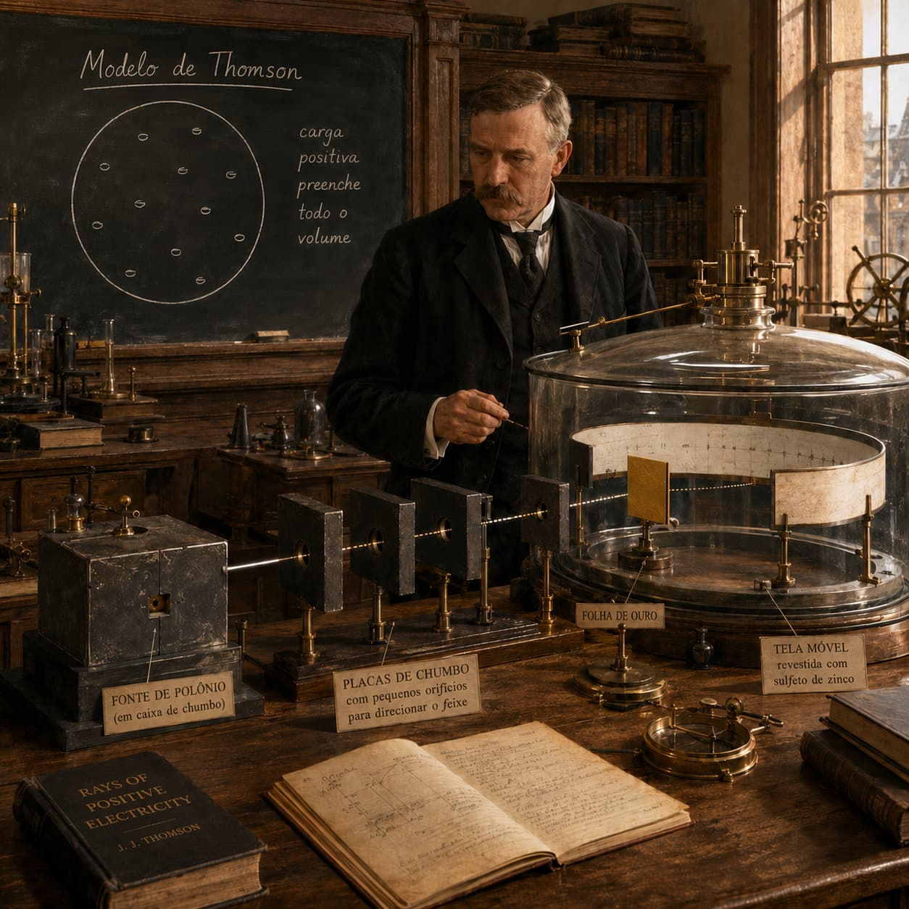

Time Capsule — 1911
Rutherford: "Before we begin, let's recall Thomson's idea. According to him, the atom would be a sphere of positive charge spread throughout its whole volume, containing electrons distributed within it, like raisins in a pudding.
For a while, this model seemed to explain well what scientists observed. But, like every good scientist, we should not accept an idea just because it seems correct.
Let's put it to the test.
Bring me the polonium source, inside the lead box."
Experiment observations
Most particles pass through
confirms Thomson's model
Some are deflected
concentrated charge exists
Very rare ones bounce almost straight back
small, dense, positive nucleus